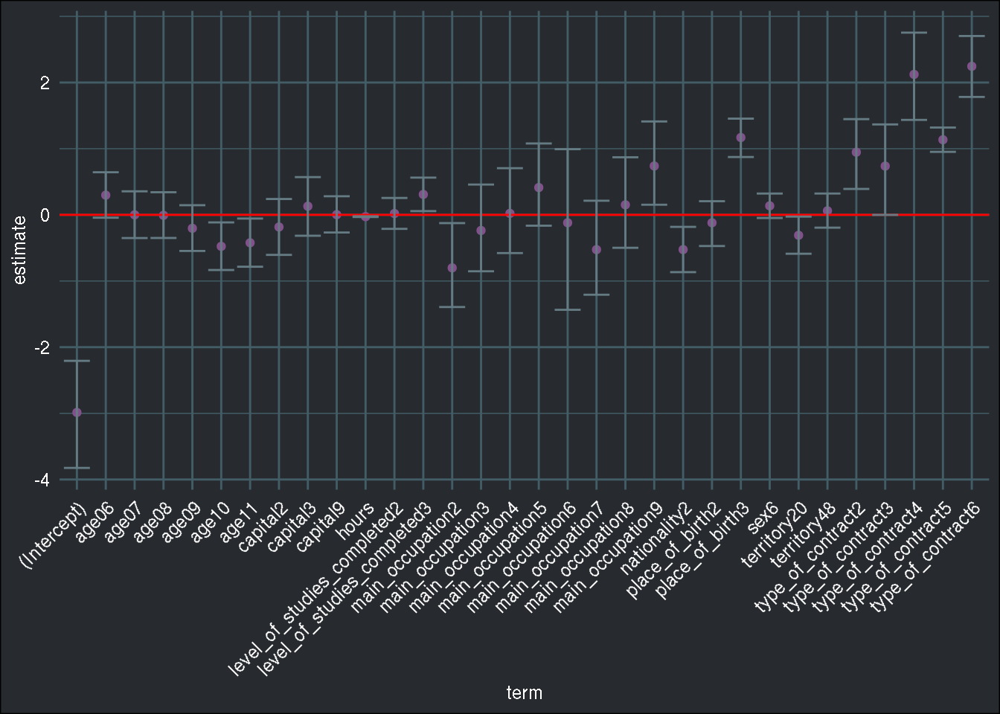
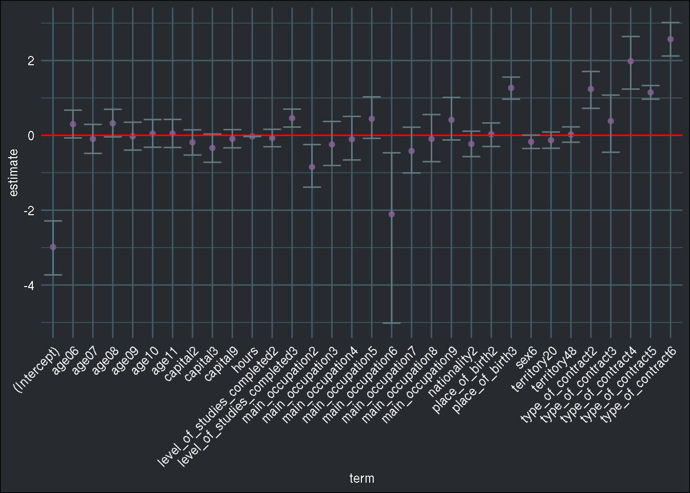
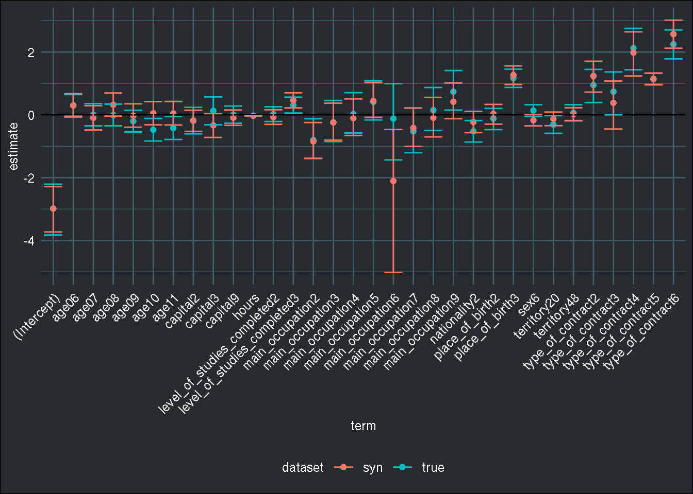

Synthetic micro-datasets: a promising middle ground between data privacy and data analysis
Intro: the need for microdata, and the risk of disclosure
Survey and administrative data are essential for scientific research, however accessing such datasets can be very tricky, or even impossible. In my previous job I was responsible for getting access to such “scientific micro-datasets” from institutions like Eurostat. In general, getting access to these micro datasets was only a question of filling out some forms and signing NDAs. But this was true only because my previous employer was an accredited research entity. Companies from the private sector or unaffiliated, individual, researchers cannot get access to the microdata sets. This is because institutions that produce such datasets absolutely do not want any type of personal information to be disclosed.
For instance, with the labour force survey, a National Statistical Institute (NSI) collects information about wages, family structure, educational attainment and much more. If, say, a politician would answer to the survey and his answers would leak to the public that would be disastrous for NSIs. So this is why access is restricted to accredited research institutions. You may be asking yourself, “how could the politicians answers leak? The data is anonymized!” Indeed it is, but in some cases that may not be enough to ensure that information does not get disclosed. Suppose that the dataset contains enough information to allow you to know for certain that you found said politician, assume that this politician is a 43 year old man, has two children, a PhD in theology and lives in Strassen, one of Luxembourg-City very nice neighborhoods. It would be quite easy to find him in the dataset and then find out his wage.
To avoid this, researchers are required to perform output checking, which means going through the set of outputs (summary tables, graphs, tables with regression coefficients…) and making sure that it is not possible to find out individuals. For instance, in Luxembourg there are two companies in the tobacco industry. Luxembourg’s NSI cannot release the total turnover of the industry, because then company A would subtract its turnover from the total and find out its competitor’s turnover. Now these are all hypothetical examples, and we might argue that the risk of leakage is quite low, especially if NSIs make sure to lower the precision of the variables, by providing age categories instead of the exact age for example. Or capping wages that exceed a certain fixed amount. In any case for now most NSIs don’t release micro data to the public, and this poses some challenges for research. First of all, even for researchers, it would be great if the data was freely accessible. It would allow research to go straight to data analysis and look at the structure of the data before applying for access, with the risk of getting access to useless data. And of course it would be great for the public at large to be able to freely access such data, for educational purposes at the very least. It would also increase competition between research institutions and the private sector when it comes to conducting studies using such data. Free access to the microdata would level the playing field. Now, some NSIs do release micro data to the public, see Eustat, the NSI from the Basque country, an autonomous region of Spain. It is not clear to me if they also have more detailed data that is only accessible to researchers, but the data they offer is already quite interesting.
A middle ground between only releasing data to researchers and making it completely freely accessible is to create a synthetic dataset, which does not contain any of the original records, but which still allows to perform meaningful analyses.
I’m not yet very familiar with the details of the procedure, but in this blog post I’ll use Eustat’s microdata to generate a synthetic dataset. I’ll then perform the same analysis on both the original dataset and the synthetic dataset. The dataset I’ll be using can be found here, and is called Population with relation to activity (PRA):
The Survey on the Population in Relation to Activity operation is a continuous source of information on the characteristics and dynamics of the labour force of the Basque Country. It records the relation to productive activity of the population resident in family households, as well as the changes produced in labour situations; it produces indicators of conjunctural variations in the evolution of the active population; it also estimates the degree of participation of the population in economically non-productive activities. It offers information on the province and capital level.
I’ll then compare the results of the analyses performed on the two datasets which will hopefully be very similar. To create the synthetic dataset, I’ll be using the {synthpop} package. You can read the detailed vignette here - pdf warning -. First, let me perform some cleaning steps. There are four datasets included in the archive. Let’s load them:
library(tidyverse)
library(tidymodels)
library(readxl)
library(synthpop)
list_data <- Sys.glob("MICRO*.csv")
dataset <- map(list_data, read_csv2) %>%
bind_rows()
head(dataset)The columns are labeled in Spanish so I’m copy pasting the labels into Google translate and paste them back into my script. I saved the English names into the english.rds object for posterity. These steps are detailed in the next lines:
dictionary <- read_xlsx("Microdatos_PRA_2019/diseño_registro_microdatos_pra.xlsx", sheet="Valores",
col_names = FALSE)## New names:
## * `` -> ...1
## * `` -> ...2
## * `` -> ...3col_names <- dictionary %>%
filter(!is.na(...1)) %>%
dplyr::select(1:2)
# copy to clipboard, paste to google translate
# couldn't be bothered to use an api and google cloud or whatever
#clipr::write_clip(col_names$`...2`)
#english <- clipr::read_clip()
english <- readRDS("english_col_names.rds")
col_names$english <- english
colnames(dataset) <- col_names$english
dataset <- janitor::clean_names(dataset)I now create a function that will perform the cleaning steps:
basic_cleaning <- function(dataset){
dataset %>%
dplyr::filter(age %in% c("05", "06", "07", "08", "09", "10", "11")) %>%
dplyr::filter(!is.na(job_search)) %>%
dplyr::select(territory, capital, sex, place_of_birth, age, nationality, level_of_studies_completed,
job_search, main_occupation, type_of_contract, hours) %>%
dplyr::mutate_at(.vars = vars(-hours), .funs=as.factor)
}Putting on my econometricians hat
Let’s now suppose that I’m only interested in running a logistic regression:
pra <- basic_cleaning(dataset)
head(pra)## # A tibble: 6 x 11
## territory capital sex place_of_birth age nationality level_of_studie…
## <fct> <fct> <fct> <fct> <fct> <fct> <fct>
## 1 48 9 6 1 09 1 1
## 2 48 9 1 1 09 1 2
## 3 48 1 1 1 11 1 3
## 4 48 1 6 1 10 1 3
## 5 48 9 6 1 07 1 3
## 6 48 9 1 1 09 1 1
## # … with 4 more variables: job_search <fct>, main_occupation <fct>,
## # type_of_contract <fct>, hours <dbl>logit_model <- glm(job_search ~ ., data = pra, family = binomial())
# Create a tidy dataset with the results of the regression
tidy_logit_model <- tidy(logit_model, conf.int = TRUE) %>%
mutate(dataset = "true")Let’s now take a look at the coefficients, by plotting their value along with their confidence intervals:
ggplot(tidy_logit_model, aes(x = term, y = estimate)) +
geom_point(colour = "#82518c") +
geom_hline(yintercept = 0, colour = "red") +
geom_errorbar(aes(ymin = conf.low, ymax = conf.high), colour = "#657b83") +
brotools::theme_blog() +
theme(axis.text.x = element_text(angle = 45, hjust = 1)) 
Ok, so now, how would the results change if I run the same analysis on the synthetic dataset? First, I need to generate this synthetic dataset:
my_seed <- 1234
synthetic_data <- syn(pra, seed = my_seed)## Synthesis
## -----------
## territory capital sex place_of_birth age nationality level_of_studies_completed job_search main_occupation type_of_contract
## hours
The synthetic data is generated by a single call to the syn() function included in the {synthpop} package. Let’s take a look at the generated object:
synthetic_data## Call:
## ($call) syn(data = pra, seed = my_seed)
##
## Number of synthesised data sets:
## ($m) 1
##
## First rows of synthesised data set:
## ($syn)
## territory capital sex place_of_birth age nationality
## 1 48 9 1 1 06 1
## 2 01 9 6 3 09 1
## 3 48 3 1 1 08 1
## 4 48 9 6 1 11 1
## 5 20 2 6 1 09 1
## 6 48 1 6 1 11 1
## level_of_studies_completed job_search main_occupation type_of_contract hours
## 1 3 N 2 1 40
## 2 1 S 9 6 10
## 3 1 N 6 <NA> 32
## 4 2 N 4 1 32
## 5 3 N 5 <NA> 40
## 6 1 S 7 <NA> NA
## ...
##
## Synthesising methods:
## ($method)
## territory capital
## "sample" "cart"
## sex place_of_birth
## "cart" "cart"
## age nationality
## "cart" "cart"
## level_of_studies_completed job_search
## "cart" "cart"
## main_occupation type_of_contract
## "cart" "cart"
## hours
## "cart"
##
## Order of synthesis:
## ($visit.sequence)
## territory capital
## 1 2
## sex place_of_birth
## 3 4
## age nationality
## 5 6
## level_of_studies_completed job_search
## 7 8
## main_occupation type_of_contract
## 9 10
## hours
## 11
##
## Matrix of predictors:
## ($predictor.matrix)
## territory capital sex place_of_birth age nationality
## territory 0 0 0 0 0 0
## capital 1 0 0 0 0 0
## sex 1 1 0 0 0 0
## place_of_birth 1 1 1 0 0 0
## age 1 1 1 1 0 0
## nationality 1 1 1 1 1 0
## level_of_studies_completed 1 1 1 1 1 1
## job_search 1 1 1 1 1 1
## main_occupation 1 1 1 1 1 1
## type_of_contract 1 1 1 1 1 1
## hours 1 1 1 1 1 1
## level_of_studies_completed job_search
## territory 0 0
## capital 0 0
## sex 0 0
## place_of_birth 0 0
## age 0 0
## nationality 0 0
## level_of_studies_completed 0 0
## job_search 1 0
## main_occupation 1 1
## type_of_contract 1 1
## hours 1 1
## main_occupation type_of_contract hours
## territory 0 0 0
## capital 0 0 0
## sex 0 0 0
## place_of_birth 0 0 0
## age 0 0 0
## nationality 0 0 0
## level_of_studies_completed 0 0 0
## job_search 0 0 0
## main_occupation 0 0 0
## type_of_contract 1 0 0
## hours 1 1 0
As you can see, synthetic_data is a list with several elements. The data is inside the syn element. Let’s extract it, and perform the same analysis from before:
syn_pra <- synthetic_data$syn
head(syn_pra)## territory capital sex place_of_birth age nationality
## 1 48 9 1 1 06 1
## 2 01 9 6 3 09 1
## 3 48 3 1 1 08 1
## 4 48 9 6 1 11 1
## 5 20 2 6 1 09 1
## 6 48 1 6 1 11 1
## level_of_studies_completed job_search main_occupation type_of_contract hours
## 1 3 N 2 1 40
## 2 1 S 9 6 10
## 3 1 N 6 <NA> 32
## 4 2 N 4 1 32
## 5 3 N 5 <NA> 40
## 6 1 S 7 <NA> NAsyn_pra <- basic_cleaning(syn_pra)
logit_model_syn <- glm(job_search ~ ., data = syn_pra, family = binomial())
tidy_logit_syn <- tidy(logit_model_syn, conf.int = TRUE) %>%
mutate(dataset = "syn")
ggplot(tidy_logit_syn, aes(x = term, y = estimate)) +
geom_point(colour = "#82518c") +
geom_hline(yintercept = 0, colour = "red") +
geom_errorbar(aes(ymin = conf.low, ymax = conf.high), colour = "#657b83") +
brotools::theme_blog() +
theme(axis.text.x = element_text(angle = 45, hjust = 1)) 
To ease the comparison between the coefficients of the model, let’s create a single graph:
coeff_models <- bind_rows(list(tidy_logit_model, tidy_logit_syn))
ggplot(coeff_models, aes(x = term, y = estimate, colour = dataset)) +
geom_point() +
geom_hline(yintercept = 0) +
geom_errorbar(aes(ymin = conf.low, ymax = conf.high)) +
brotools::theme_blog() +
theme(axis.text.x = element_text(angle = 45, hjust = 1)) 
This is quite interesting; generally, there is quite some overlap between the synthetic data and the real data! There are some differences though, for instance, main_occupation6 is significant with the synthetic data, but is not with the real data. There’s the possibility to generate more than one synthetic dataset, which would very likely reduce the noise.
Putting on my data scientist hat
Now let’s suppose that I am only interested into prediction. For this, I am going to split my dataset into a training and testing set, then run a logistic regression and a random forest, assess the models’ performance with 10-fold cross validation. I’ll do this on both the real and the synthetic data. To perform the analysis, I’ll be using the {tidymodels} framework; I’m going to explain the code that follows line by line, because I’ll very likely write a blog post focusing on {tidymodels} soon.
So, let’s write a function that does exactly what I explained above:
training_and_evaluating <- function(dataset){
pra_split <- initial_split(dataset, prop = 0.8)
pra_train <- training(pra_split)
pra_test <- testing(pra_split)
pra_cv_splits <- vfold_cv(pra_train, v = 10)
preprocess <- recipe(job_search ~ ., data = pra) %>%
step_knnimpute(all_predictors())
logit_pra <- logistic_reg() %>%
set_engine("glm")
fitted_logit <- fit_resamples(preprocess,
model = logit_pra,
resamples = pra_cv_splits,
control = control_resamples(save_pred = TRUE))
metric_logit <- fitted_logit$.metrics %>%
bind_rows() %>%
group_by(.metric) %>%
summarise_at(.vars = vars(.estimate), .funs = lst(mean, sd)) %>%
mutate(model = "logit")
rf_pra <- rand_forest(mode = "classification") %>%
set_engine(engine = "ranger")
fitted_forest <- fit_resamples(preprocess,
model = rf_pra,
resamples = pra_cv_splits,
control = control_resamples(save_pred = TRUE))
metric_forest <- fitted_forest$.metrics %>%
bind_rows() %>%
group_by(.metric) %>%
summarise_at(.vars = vars(.estimate), .funs = lst(mean, sd)) %>%
mutate(model = "forest")
bind_rows(list(metric_logit, metric_forest))
}Now I can run this function on both the real and the synthetic data, and look at the performance of the logistic regression and of the random forest:
true_data_performance <- training_and_evaluating(pra)
syn_data_performance <- training_and_evaluating(syn_pra)true_data_performance## # A tibble: 4 x 4
## .metric mean sd model
## <chr> <dbl> <dbl> <chr>
## 1 accuracy 0.882 0.00816 logit
## 2 roc_auc 0.708 0.0172 logit
## 3 accuracy 0.907 0.00619 forest
## 4 roc_auc 0.879 0.0123 forestsyn_data_performance## # A tibble: 4 x 4
## .metric mean sd model
## <chr> <dbl> <dbl> <chr>
## 1 accuracy 0.882 0.00758 logit
## 2 roc_auc 0.691 0.0182 logit
## 3 accuracy 0.899 0.00615 forest
## 4 roc_auc 0.857 0.0124 forestThe performance is pretty much the same!
Generating synthetic data is a very promising approach, that I certainly will be using more; I think that such approaches can also be very interesting in the private sector (not only to ease access to microdata for researchers) especially within large companies. For instance, it can happen that the data owners from say, an insurance company, are not very keen on sharing sensitive client information with their data scientists. However, by generating a synthetic dataset and sharing the synthetic data with their data science team, the data owners avoid any chance of disclosure of sensitive information, while at the same time allowing their data scientists to develop interesting analyses or applications on the data!